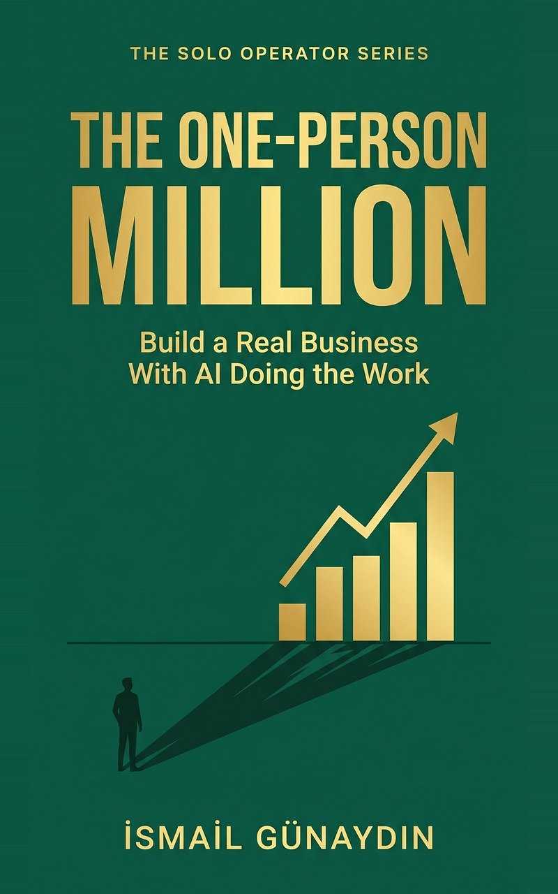

Free Book Guides / The One-Person Million

Free guides and tools from The One-Person Million by İsmail Günaydın: how to scale a one-person business without hiring, a freelance pricing calculator, a deck on selling outcomes, and a printable quality checklist.
By İsmail Günaydın. See the book on Amazon
Open all the free files in one Google Drive folder
General business information, not financial, tax or legal advice. No income result is promised or implied. Theo is the book's composite example, not a real person.